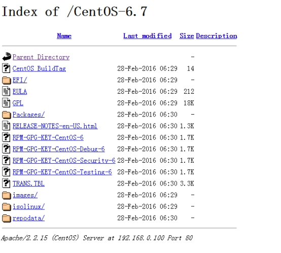

1. Ubuntu软件安装与卸载
1.1. 更新Ubuntu软件下载地址
开源软件镜像站 ：https://mirrors.tuna.tsinghua.edu.cn/help/ubuntu/
Ubuntu 的软件源配置文件是 /etc/apt/sources.list。将系统自带的该文件做个备份，将该文件替换为下面内容，即可使用 TUNA 的软件源镜像。
ubuntu版本: 16.04 LTS
# 默认注释了源码镜像以提高 apt update 速度，如有需要可自行取消注释
deb https://mirrors.tuna.tsinghua.edu.cn/ubuntu/ xenial main restricted universe multiverse
# deb-src https://mirrors.tuna.tsinghua.edu.cn/ubuntu/ xenial main restricted universe multiverse
deb https://mirrors.tuna.tsinghua.edu.cn/ubuntu/ xenial-updates main restricted universe multiverse
# deb-src https://mirrors.tuna.tsinghua.edu.cn/ubuntu/ xenial-updates main restricted universe multiverse
deb https://mirrors.tuna.tsinghua.edu.cn/ubuntu/ xenial-backports main restricted universe multiverse
# deb-src https://mirrors.tuna.tsinghua.edu.cn/ubuntu/ xenial-backports main restricted universe multiverse
deb https://mirrors.tuna.tsinghua.edu.cn/ubuntu/ xenial-security main restricted universe multiverse
# deb-src https://mirrors.tuna.tsinghua.edu.cn/ubuntu/ xenial-security main restricted universe multiverse
# 预发布软件源，不建议启用
# deb https://mirrors.tuna.tsinghua.edu.cn/ubuntu/ xenial-proposed main restricted universe multiverse
# deb-src https://mirrors.tuna.tsinghua.edu.cn/ubuntu/ xenial-proposed main restricted universe multiverse
然后
sudo cp /etc/apt/sources.list /etc/apt/sources.list.backup
再sudo vim /etc/apt/sources.list修改为以上内容
1.2. Ubuntu软件操作的相关命令
sudo apt-get update 更新源
sudo apt-get install package 安装包
sudo apt-get remove package 删除包
sudo apt-cache search package 搜索软件包
sudo apt-cache show package 获取包的相关信息，如说明、大小、版本等
sudo apt-get install package --reinstall 重新安装包
sudo apt-get -f install 修复安装
sudo apt-get remove package --purge 删除包，包括配置文件等
sudo apt-get build-dep package 安装相关的编译环境
sudo apt-get upgrade 更新已安装的包
sudo apt-get dist-upgrade 升级系统
sudo apt-cache depends package 了解使用该包依赖那些包
sudo apt-cache rdepends package 查看该包被哪些包依赖
sudo apt-get source package 下载该包的源代码
sudo apt-get clean && sudo apt-get autoclean 清理无用的包
sudo apt-get check 检查是否有损坏的依赖
2. yum安装命令
yum（ Yellow dog Updater, Modified）是一个在Fedora和RedHat以及SUSE中的Shell前端软件包管理器。
基於RPM包管理，能够从指定的服务器自动下载RPM包并且安装，可以自动处理依赖性关系，并且一次安装所有依赖的软体包，无须繁琐地一次次下载、安装。
yum提供了查找、安装、删除某一个、一组甚至全部软件包的命令，而且命令简洁而又好记。
2.1. 更新国内yum源
网易（163）yum源是国内最好的yum源之一 ，无论是速度还是软件版本，都非常的不错。
将yum源设置为163 yum，可以提升软件包安装和更新的速度，同时避免一些常见软件版本无法找到。
首先备份/etc/yum.repos.d/CentOS-Base.repo
mv /etc/yum.repos.d/CentOS-Base.repo /etc/yum.repos.d/CentOS-Base.repo.backup
下载对应版本 repo 文件, 放入 /etc/yum.repos.d/
- CentOS5 ：http://mirrors.163.com/.help/CentOS5-Base-163.repo
- CentOS6 ：http://mirrors.163.com/.help/CentOS6-Base-163.repo
- CentOS7 ：http://mirrors.163.com/.help/CentOS7-Base-163.repo
wget http://mirrors.163.com/.help/CentOS7-Base-163.repo
mv CentOS7-Base-163.repo /etc/yum.repos.d/CentOS-Base.repo
运行以下命令生成缓存
yum clean all
yum makecache
除了网易之外，国内还有其他不错的 yum 源，比如中科大和搜狐。
中科大的 yum 源，安装方法查看：https://lug.ustc.edu.cn/wiki/mirrors/help/centos
sohu 的 yum 源安装方法查看: http://mirrors.sohu.com/help/centos.html
2.2. yum常用命令
yum 语法：
yum [options] [command] [package ...]
选项：
- options：可选，选项包括-h（帮助），-y（当安装过程提示选择全部为"yes"），-q（不显示安装的过程）等等。
- command：要进行的操作。
- package：操作的对象。
实例：
- 列出所有可更新的软件清单命令：
yum check-update - 更新所有软件命令：
yum update - 仅安装指定的软件命令：
yum install <package_name> - 仅更新指定的软件命令：
yum update <package_name> - 显示包信息：
yum info <package_name> - 列出所有可安裝的软件清单命令：
yum list - 删除软件包命令：
yum remove <package_name> - 查找软件包 命令：
yum search <keyword> - 清除缓存命令:
- yum clean packages: 清除缓存目录下的软件包
- yum clean headers: 清除缓存目录下的 headers
- yum clean oldheaders: 清除缓存目录下旧的 headers
- yum clean, yum clean all (= yum clean packages; yum clean oldheaders) :清除缓存目录下的软件包及旧的headers
2.3. yum在线安装MySQL5.7
Step1: 检测系统是否自带安装mysql
yum list installed | grep mysql
Step2: 删除系统自带的mysql及其依赖
yum -y remove mysql-libs.x86_64
Step3: 给CentOS添加rpm源，并且选择较新的源
wget dev.mysql.com/get/mysql-community-release-el7-5.noarch.rpm
yum localinstall mysql-community-release-el7-5.noarch.rpm
yum repolist all | grep mysql
yum-config-manager --disable mysql55-community
yum-config-manager --disable mysql56-community
yum-config-manager --enable mysql57-community-dmr
yum repolist enabled | grep mysql
Step4:安装mysql 服务器
yum install mysql-community-server
Step5: 启动mysql
service mysqld start
grep "password" /var/log/mysqld.log(查看临时密码)
SET PASSWORD = PASSWORD('your new password');
ALTER USER 'root'@'localhost' PASSWORD EXPIRE NEVER;
flush privileges;
默认的要求必须的设置格式： 包含数字、小写或大写字母以及特殊字符
默认的要求必须的设置格式： 包含数字、小写或大写字母以及特殊字符
如果不想复杂，可以使用以下方式
set global validate_password_policy=0;
set global validate_password_length=1;
Step6: 查看mysql是否自启动,并且设置开启自启动
# chkconfig --list | grep mysqld
# chkconfig mysqld on
Step7: mysql安全设置
mysql_secure_installation
2.4. rpm
RPM是Red Hat公司随Redhat Linux推出了一个软件包管理器，通过它能够更加轻松容易地实现软件的安装。
常见用法：
rpm -ivh
rpm -e
rpm -qi
rpm -qa | grep xxx 查询软件是否安装（包括相关依赖）
rpm -Uvh
具体参数详解：
-i, --install 安装包
-v, --verbose 列出更多详细信息，安装进度
-h, --hash 安装时列出hash标记 (与 -v连用)
-e, --erase 卸载安装包
-U, --upgrade=
安装软件
# rpm -hvi dejagnu-1.4.2-10.noarch.rpm
警告：dejagnu-1.4.2-10.noarch.rpm: V3 DSA 签名：NOKEY, key ID db42a60e
准备...
########################################### [100%]
显示软件安装信息
# rpm -qi dejagnu-1.4.2-10.noarch.rpm
【第1次更新 教程、类似命令关联】
3. Linux的基本配置
1.修改主机名
vi /etc/sysconfig/network
NETWORKING=yes
HOSTNAME=hadoop1
2.修改ip地址
vi /etc/sysconfig/network-scripts/ifcfg-eth0
DEVICE=eth0
TYPE=Ethernet
ONBOOT=yes
BOOTPROTO=static
IPADDR=192.168.100.101
NETMASK=255.255.255.0
service network restart
3.修改ip地址和主机名的映射关系
vi /etc/hosts
127.0.0.1 localhost localhost.localdomain localhost4 localhost4.localdomain4
::1 localhost localhost.localdomain localhost6 localhost6.localdomain6
192.168.100.101 hadoop1
4.关闭iptables并设置其开机启动/不启动
service iptables stop
chkconfig iptables on
chkconfig iptables off
3.1. 安装JDK
1.上传jdk-7u45-linux-x64.tar.gz到Linux上
2.解压jdk到/usr/local目录
tar -zxvf jdk-7u45-linux-x64.tar.gz -C /usr/local/
3.设置环境变量，在/etc/profile文件最后追加相关内容(技巧r:!pwd)
vi /etc/profile
export JAVA_HOME=/usr/local/jdk1.7.0_45
export PATH=$PATH:$JAVA_HOME/bin
4.刷新环境变量
source /etc/profile
5.测试java命令是否可用
java -version
3.2. 制作本地YUM源
上传CentOS-6.7-x86_64-bin-DVD1.iso到服务器
将CentOS-6.7-x86_64-bin-DVD1.iso镜像挂载到某个目录:
mkdir /var/iso
mount -o loop CentOS-6.7-x86_64-bin-DVD1.iso /var/iso
安装并启动Apache服务器：
yum install -y httpd
service httpd start
使用浏览器访问http://192.168.100.101（如果访问不通，检查防火墙是否开启了80端口或关闭防火墙）
将YUM源配置到httpd中：
cp -r /var/iso/ /var/www/html/CentOS-6.7
umount /var/iso
在浏览器中访问http://192.168.100.101/CentOS-6.7/

配置使用YUM源：
备份原有的YUM源的配置文件
cd /etc/yum.repos.d/
rename .repo .repo.bak *
修改YUM源配置文件
vi CentOS-Local.repo
[base]
name=CentOS-Local
baseurl=http://192.168.100.101/CentOS-6.7
gpgcheck=1
enabled=1 #很重要，1才启用
gpgkey=file:///etc/pki/rpm-gpg/RPM-GPG-KEY-CentOS-6
重建yum缓存
#清除yum缓存文件，重新新建
yum clean all && yum makecache
#列出可用的YUM源
yum repolist
rpm包生成yum源目录
如果已经下载好了rpm包，可以自行制作一个yum源（yum仓库）。将下载的rpm包上传到centos服务器上（比如/data/rpm目录下），然后进入存放rpm包的目录，执行以下命令：
# cd /data/rpm
# createrepo .
这样，rpm包存放的目录就可以作为yum源目录使用。 如果提示找不到createrepo命令，可以使用yum install createrepo安装该程序。